The south of Portugal…
the Algarve
We come back to the Algarve every summer. Our routines include beach, pool and long dinners with a full house. The house door stays open to let the wind through and we don’t leave the table for at least 3 hours.
Our wedding is near Tavira, a little town where life moves at its own pace. Think whitewashed houses, terracotta rooftops, cobbled streets, and a river running through the town. Just beyond, you’ll find salt flats, endless sandy beaches, and the Atlantic Ocean.
The celebration itself is up in the hills at Hotel Quinta do Marco, about 15 minutes from town. If you come early or stay a little longer, here is the Algarve we love – from Tavira all the way to the wild west coast.
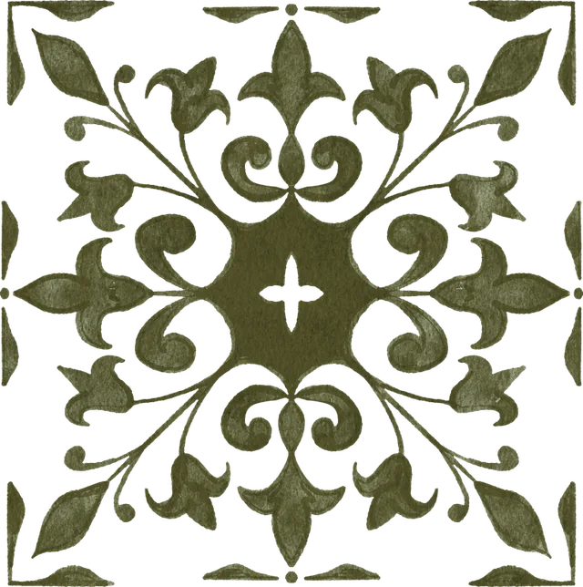
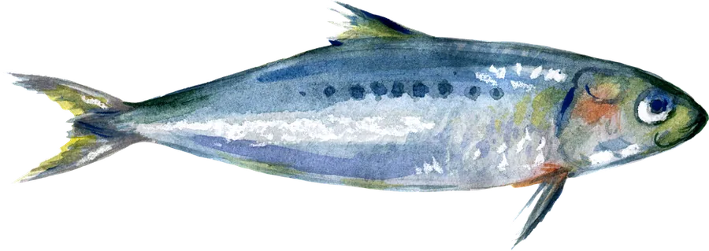
Beaches, food & things to do
our favourites
Basemap: Azulejo Complete by Marek Hoffmann · © OpenStreetMap contributors, Natural Earth
Eat like a local
dishes to try
-
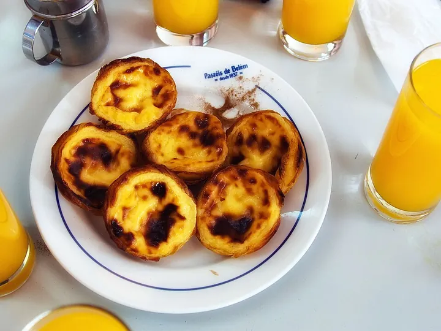
-
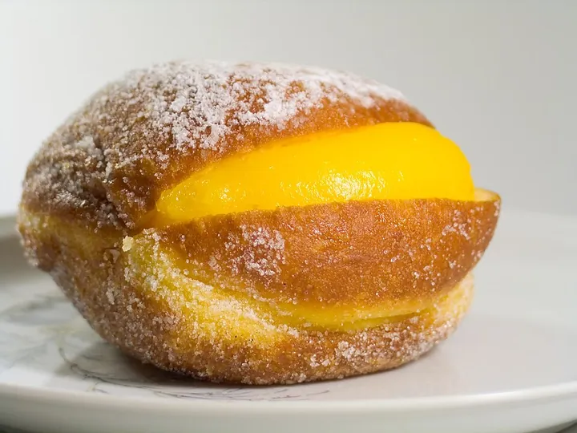
Bola de Berlim
the beach doughnut
Not a tourist trap – the Portuguese love it! A sugary doughnut sold by vendors walking along the sand, com creme (filled with custard) or sem creme (plain).
Photo: Carlos Paes, Copyrighted free use
-
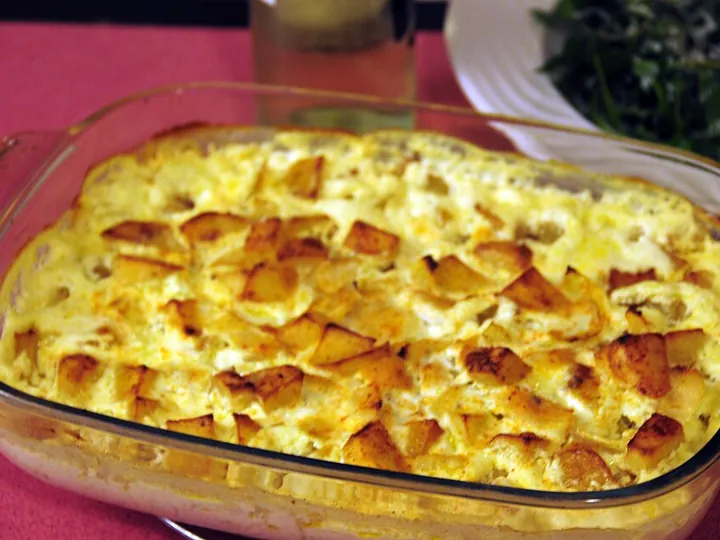
-
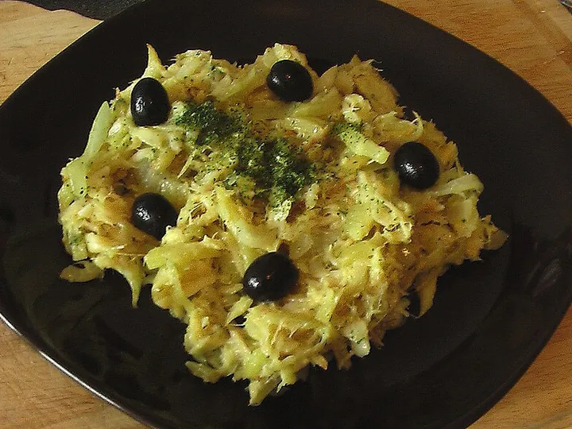
Bacalhau à Brás
salt cod with egg & fries
Shredded salt cod tossed with onions, matchstick fries and soft scrambled egg, finished with black olives and parsley.
-
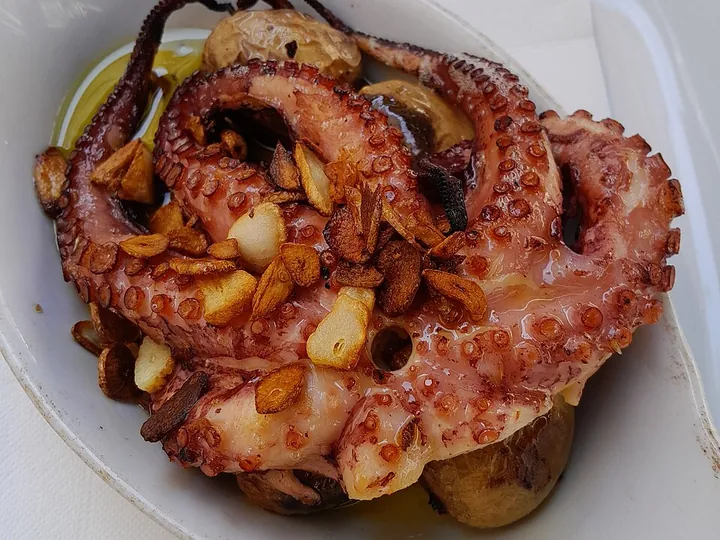
Polvo à lagareiro
roasted octopus
Tender octopus roasted with lots of olive oil and garlic, served with little ‘punched’ potatoes.
Photo: August Dominus, CC0
-
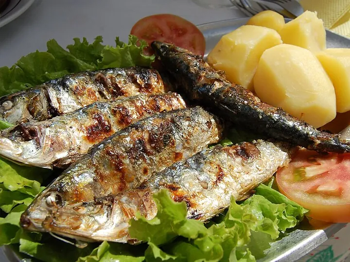
Sardinhas & peixe grelhado
grilled fish
Grilled sardines taste like a Portuguese summer. Also ask for the catch of the day – dourada (sea bream) or robalo (sea bass), simply grilled.
-
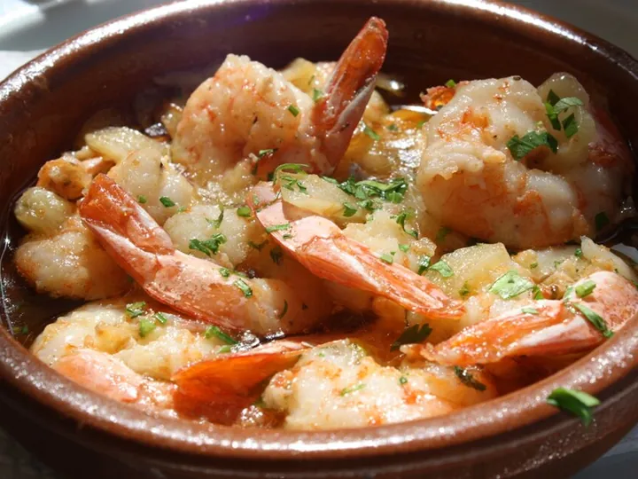
Camarão ao alho
garlic prawns
Prawns sizzling in olive oil, garlic and a little chilli. Keep some bread for the sauce.
-
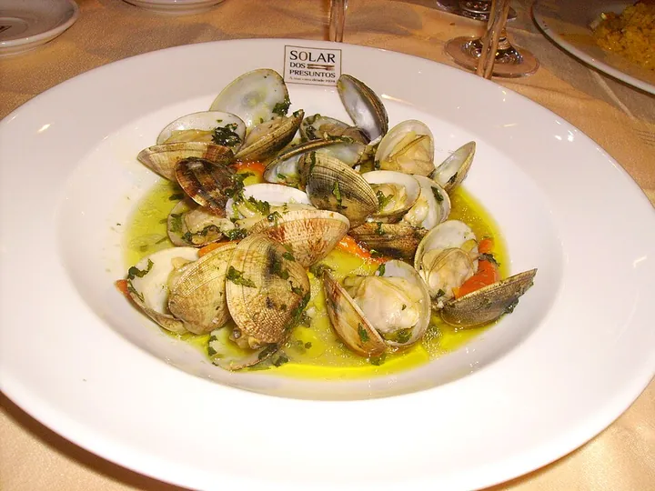
Amêijoas à Bulhão Pato
clams
Clams from the Ria Formosa, steamed with garlic, coriander, olive oil and a squeeze of lemon.
Photo: Mariana Aurelio, CC BY-SA 2.0
-
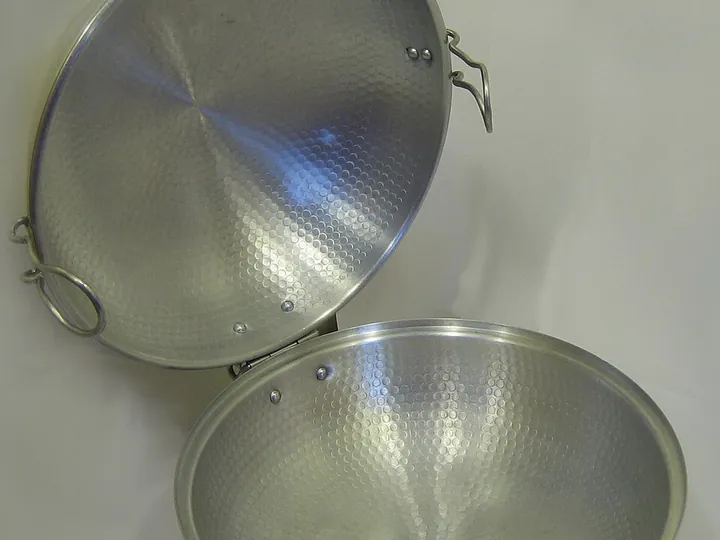
Cataplana
the Algarve’s own
Named after the copper pan it’s cooked in: seafood (or pork and clams) steamed in a rich tomato broth and opened at the table. Made for sharing.
Photo: Sevinha, Public domain
-
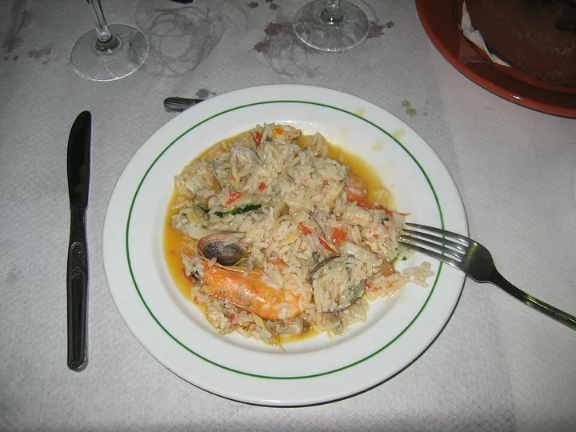
Arroz de marisco & arroz de tomate
seafood rice & tomato rice
Not a paella: a soupy, tomatoey rice full of prawns, clams and crab. Its simpler sister, arroz de tomate, usually comes with fried fish.
Photo: Cayetano Delgado, CC BY-SA 2.0
-
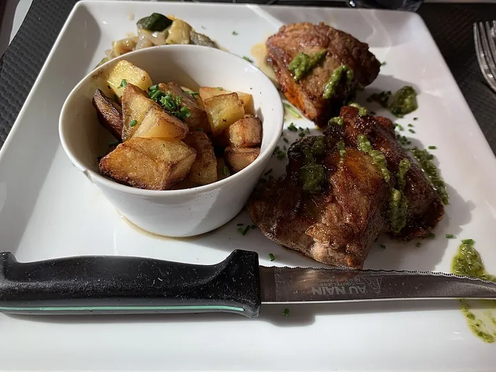
Porco preto
black Iberian pork
From the black Iberian pig. Order secretos or plumas – juicy grilled cuts with loads of flavour.
Photo: Benoît Prieur, CC0